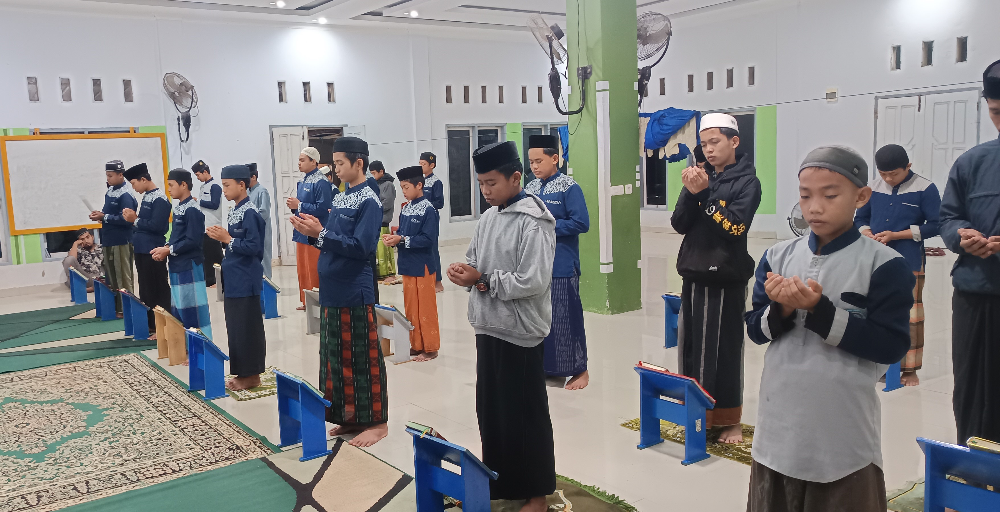
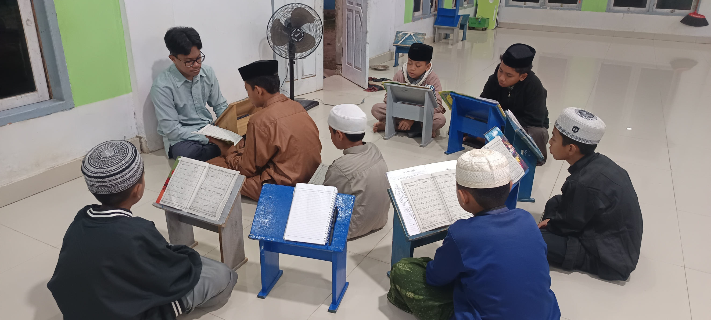
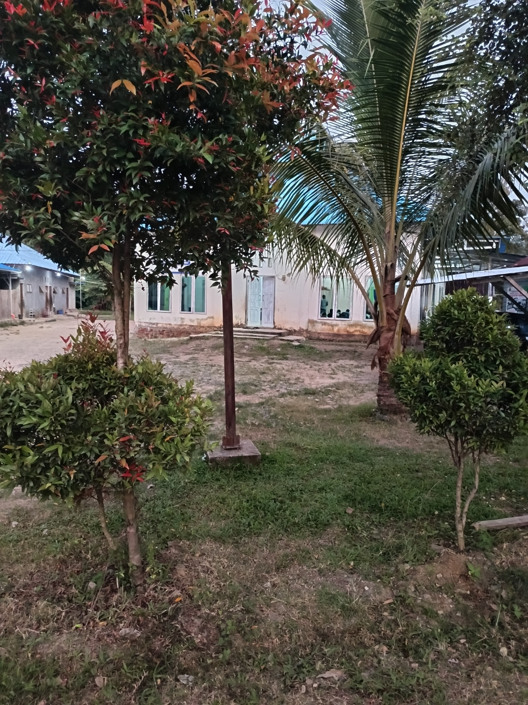
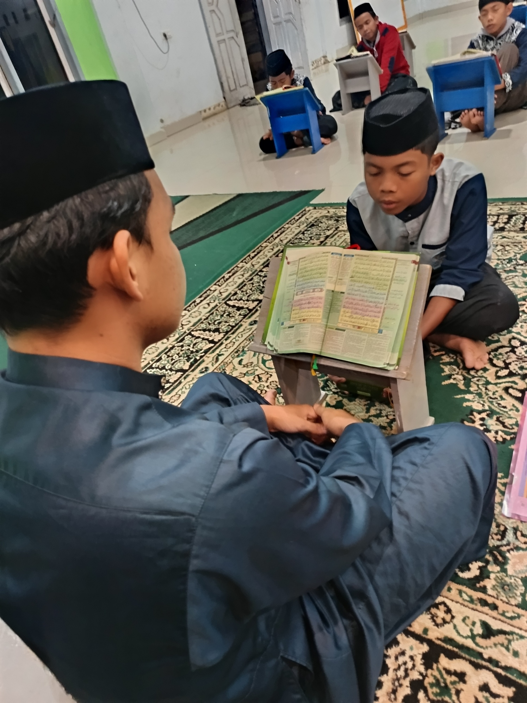

Membangun Masa Depan
Bersama Al-Qur'an!

Santri berdoa sebelum memulai halaqah.
Di tengah derasnya arus modernisasi, menjaga identitas sebagai generasi Qur'ani adalah sebuah tantangan sekaligus kemuliaan. Pondok Tahfidz Qur'an Dzu Nurain hadir bukan sekadar sebagai tempat menghafal, melainkan sebagai rumah bagi jiwa-jiwa yang rindu akan ketenangan wahyu.
Terletak di jantung keasrian Kolaka Timur, kami percaya bahwa lingkungan memiliki peran vital dalam proses *talaqqi*. Jauh dari hiruk-pikuk perkotaan, setiap santri dibimbing untuk tidak hanya menghafalkan huruf demi huruf, tetapi juga meresapi makna dan adab yang terkandung di dalamnya. Program kami dirancang secara progresif—mengikuti perkembangan zaman tanpa meninggalkan tradisi keilmuan Islam yang murni.

Program Dirosa untuk Santri baru, Agar mencapai Kualitas Bacaan yang di tetapkan Pondok.
Metode yang kami terapkan mengedepankan kualitas daripada sekadar kuantitas. Melalui sistem setoran yang terukur dan murojaah yang ketat, kami berupaya melahirkan para penghafal Al-Qur'an yang *Mutqin*. Fokus kami adalah mencetak lulusan yang tidak hanya cerdas secara intelektual, tetapi juga memiliki integritas moral yang kokoh untuk menjadi pemimpin di masa depan.
Bergabung bersama kami adalah langkah awal menuju perjalanan spiritual yang tak terlupakan. Di Dzu Nurain, setiap santri adalah permata yang kami asah dengan penuh kasih sayang, disiplin, dan doa, hingga mereka siap bersinar menerangi umat.
Mengapa Dzu Nurain?

Metode Terukur
Fokus pada kualitas hafalan (Mutqin) dengan bimbingan intensif setiap harinya.

Lingkungan Asri
Terletak di wilayah yang tenang dan kondusif, jauh dari kebisingan kota yang sangat di perlukan untuk fokus menghafal.

Pembimbing Berpengalaman
Dibimbing oleh ustadz berpengalaman yang menjaga tradisi keilmuan Al-Qur'an.